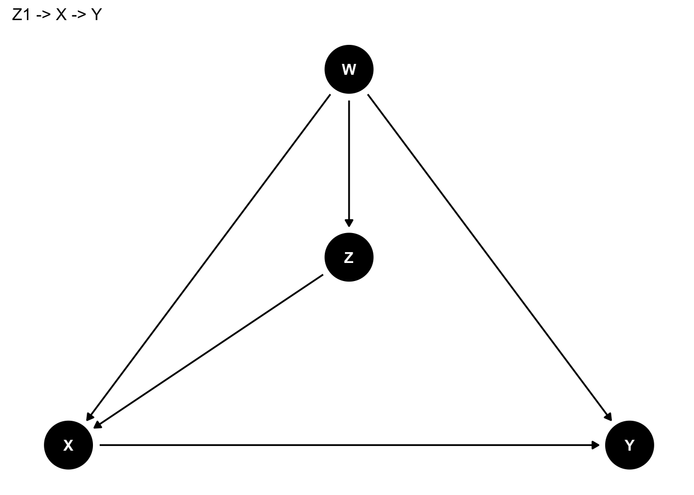

Chapter 6 A tibble: 6 x 2
gender male_d
model2 <- lm(data = piaac, wage ~ male_d)
summary(model2)##
## Call:
## lm(formula = wage ~ male_d, data = piaac)
##
## Residuals:
## Min 1Q Median 3Q Max
## -1888.8 -610.0 -327.8 367.6 8672.2
##
## Coefficients:
## Estimate Std. Error t value Pr(>|t|)
## (Intercept) 1327.81 30.13 44.08 <2e-16 ***
## male_d 868.67 41.75 20.81 <2e-16 ***
## ---
## Signif. codes: 0 '***' 0.001 '**' 0.01 '*' 0.05 '.' 0.1 ' ' 1
##
## Residual standard error: 1123 on 2898 degrees of freedom
## (1523 observations deleted due to missingness)
## Multiple R-squared: 0.13, Adjusted R-squared: 0.1297
## F-statistic: 432.9 on 1 and 2898 DF, p-value: < 2.2e-16male_dというのが、性別が男性のときに1、女性のときに0をとる変数である。この係数が868.7、切片（Intercept）が1327.8ということだから、推定された式はつぎのとおりとなる。
\[ y = 1327.8 + 868.7x \]
傾きの値は、女性と比べて男性の賃金は868.7円高いということを意味している。
この868.7という値は、2つのカテゴリ（この場合は男性・女性）、先ほど棒グラフに示した男性の平均値と女性の平均値の差に一致していることを確認しよう。傾きの値は、2つのカテゴリの平均値の差に一致する。
6.0.1 3値のカテゴリ変数
カテゴリが3値以上の場合はどうだろう？これも、基本的には同じふうに考えることができる。
piaac %>%
filter(is.na(educ) == FALSE) %>%
ggplot(aes(x = educ, y = wage, color = educ)) +
geom_violin() +
geom_point(alpha = 0.2) +
theme(legend.position = "none")## Warning: Removed 1435 rows containing non-finite values (stat_ydensity).## Warning: Removed 1435 rows containing missing values (geom_point).
中学卒を基準として、高校、短大高専、大学大学院卒だとどれくらい賃金が高いのかを推定することになる。
piaac <- piaac %>%
mutate(educ_d2 = if_else(educ == "高校", 1, 0)) %>%
mutate(educ_d3 = if_else(educ == "短大高専", 1, 0)) %>%
mutate(educ_d4 = if_else(educ == "大学大学院", 1, 0))
piaac %>%
select(educ, educ_d2, educ_d3, educ_d4) %>%
sample_n(size = 10) #それぞれどのような値となっているかチェック。行をシャッフルしています## # A tibble: 10 x 4
## educ educ_d2 educ_d3 educ_d4
## <fct> <dbl> <dbl> <dbl>
## 1 短大高専 0 1 0
## 2 大学大学院 0 0 1
## 3 大学大学院 0 0 1
## 4 短大高専 0 1 0
## 5 大学大学院 0 0 1
## 6 大学大学院 0 0 1
## 7 高校 1 0 0
## 8 高校 1 0 0
## 9 高校 1 0 0
## 10 短大高専 0 1 0model3 <- lm(data = piaac, wage ~ educ_d2 + educ_d3 + educ_d4)
summary(model3)##
## Call:
## lm(formula = wage ~ educ_d2 + educ_d3 + educ_d4, data = piaac)
##
## Residuals:
## Min 1Q Median 3Q Max
## -2034.1 -693.9 -317.5 396.3 8450.0
##
## Coefficients:
## Estimate Std. Error t value Pr(>|t|)
## (Intercept) 1455.48 72.63 20.040 <2e-16 ***
## educ_d2 71.26 80.92 0.881 0.379
## educ_d3 94.55 84.18 1.123 0.261
## educ_d4 886.32 82.01 10.808 <2e-16 ***
## ---
## Signif. codes: 0 '***' 0.001 '**' 0.01 '*' 0.05 '.' 0.1 ' ' 1
##
## Residual standard error: 1144 on 2895 degrees of freedom
## (1524 observations deleted due to missingness)
## Multiple R-squared: 0.09873, Adjusted R-squared: 0.0978
## F-statistic: 105.7 on 3 and 2895 DF, p-value: < 2.2e-16それぞれの係数は、基準カテゴリ（今回なら中学卒）と比べて、それぞれどれくらい賃金が高いのかを表している。標準誤差やp値のみかたについてはどれも同じ。
6.0.2 変数がfactorであれば自動でカテゴリとして投入される
独立変数の型がカテゴリの場合には、Rが自動で先ほどのようなダミー変数を勝手に作って投入してくれる。
model4 <- lm(data = piaac, wage ~ educ)
summary(model4)##
## Call:
## lm(formula = wage ~ educ, data = piaac)
##
## Residuals:
## Min 1Q Median 3Q Max
## -2034.1 -693.9 -317.5 396.3 8450.0
##
## Coefficients:
## Estimate Std. Error t value Pr(>|t|)
## (Intercept) 1455.48 72.63 20.040 <2e-16 ***
## educ高校 71.26 80.92 0.881 0.379
## educ短大高専 94.55 84.18 1.123 0.261
## educ大学大学院 886.32 82.01 10.808 <2e-16 ***
## ---
## Signif. codes: 0 '***' 0.001 '**' 0.01 '*' 0.05 '.' 0.1 ' ' 1
##
## Residual standard error: 1144 on 2895 degrees of freedom
## (1524 observations deleted due to missingness)
## Multiple R-squared: 0.09873, Adjusted R-squared: 0.0978
## F-statistic: 105.7 on 3 and 2895 DF, p-value: < 2.2e-16ただし、基準カテゴリは一番最初（アルファベットが早い順、漢字の場合はよくわからない）のものが勝手に選ばれるので、たとえば高校を基準にしてその他を比較したい、と思ったときには、自分でカテゴリの順序を変更しておく必要がある。
piaac <- piaac %>%
mutate(educ_reorder = factor(educ,
levels = c("高校", "中学", "短大高専", "大学大学院"),
labels = c("高校", "中学", "短大高専", "大学大学院")))
model5 <- lm(data = piaac, wage ~ educ_reorder)
summary(model5)##
## Call:
## lm(formula = wage ~ educ_reorder, data = piaac)
##
## Residuals:
## Min 1Q Median 3Q Max
## -2034.1 -693.9 -317.5 396.3 8450.0
##
## Coefficients:
## Estimate Std. Error t value Pr(>|t|)
## (Intercept) 1526.74 35.69 42.778 <2e-16 ***
## educ_reorder中学 -71.26 80.92 -0.881 0.379
## educ_reorder短大高専 23.29 55.55 0.419 0.675
## educ_reorder大学大学院 815.06 52.19 15.616 <2e-16 ***
## ---
## Signif. codes: 0 '***' 0.001 '**' 0.01 '*' 0.05 '.' 0.1 ' ' 1
##
## Residual standard error: 1144 on 2895 degrees of freedom
## (1524 observations deleted due to missingness)
## Multiple R-squared: 0.09873, Adjusted R-squared: 0.0978
## F-statistic: 105.7 on 3 and 2895 DF, p-value: < 2.2e-166.1 従属変数が2値のカテゴリ変数（0/1）の場合
6.2 従属変数が3値以上のカテゴリ変数の場合
この場合は線形回帰分析では扱うことができない。次のような対処法がある。
6.2.1 どうにかして2値にする
たとえば、親の職業（階級）によって、対象者の学歴がどの程度異なるのかを知りたいとする。このとき、学歴を「中学」「高校」「短大高専」「大学大学院」という4つのカテゴリで定義しているとする。この場合には、「大学大学院」を1、それ以外を0とすることで、大学以上か大学未満か、という2値のカテゴリに直すことで、分析が可能になる。
6.2.2 均等な順序を仮定して連続変数とする
ある程度均等な順序があると仮定できるならば、数値として扱う。たとえば、性別によって、仕事への満足度が異なるかどうかを知りたいとする。このとき、仕事への満足度は、「全体的にみて、あなたは現在の仕事にどの程度満足していますか」という質問に対して、「非常に満足」「満足」「どちらでもない」「不満」「非常に不満」という5つの選択肢から1つを選択する形式で尋ねられているとする。このときには、「非常に満足」に5、「満足」に4、「どちらでもない」に3、「不満」に2、「非常に不満」に1を振ることで、連続変数に見立てることができる。もちろん、「非常に満足」と「満足」、「満足」と「どちらでもない」の間隔が同じ1であるというのはあくまで仮定であり本当は違うかもしれないということには注意が必要だが、解釈はわかりやすくなるというメリットがある。
| 選択肢 | 調査票上の番号 | 数値化例 |
|---|---|---|
| 非常に満足 | 1 | 5 |
| 満足 | 2 | 4 |
| どちらでもない | 3 | 3 |
| 不満 | 4 | 2 |
| 非常に不満 | 5 | 1 |
なお、こうした扱いが認められるかどうかは扱う変数によって異なるので、先行研究での定義を参考にするとよい。たとえば今回のような仕事への満足度についてはおおむねこのような処理は認められているが、「中学」に1、「高校」に2、「短大高専」に3、「大学大学院」に4を振る、というような処理はあまり認められていない。しかしながら、受けた教育年数として、「中学」に9、「高校」に12、「短大高専」に14、「大学」に16、「大学院」に18（など）といった値を振ることはある程度認められている。このあたりは先行研究の操作化を参考にしつつ、最終的には自分たちの関心によって決めるとよいだろう。
6.2.3 区間の中点をとって連続変数とする
なんらかの区間をとって尋ねられている場合、その区間の中点をとって、連続変数とみなす。たとえば、日本家族社会学会が行っている2008年全国家族調査（NFRJ08）では、「あなたご自身…は、次にあげる…家事を現在どのくらいの頻度で行っていますか」という質問項目で、たとえば「食事の用意」について、以下のような選択肢で家事頻度を尋ねている。
| 選択肢 | 調査表上の番号 | 数値化例 |
|---|---|---|
| ほぼ毎日（週6〜7回） | 1 | 6.5 |
| 1週間に4〜5回 | 2 | 4.5 |
| 1週間に2〜3回 | 3 | 2.5 |
| 1週間に1回くらい | 4 | 1 |
| ほとんど行わない | 5 | 0 |
このような場合、週6〜7回という区間の中点をとって6.5、週4〜5回という区間の中点をとって4.5…とすることで、1週間当たりの家事頻度を表す連続変数と見立てることができる。
こうした扱いについても、これが妥当なのかどうかは先行研究での定義を参照すると良い。
年収などもこうした区間で扱われることがあるが、この場合は中点を定義できない（例：2050万円以上）選択肢が設けられていることがある。こうした場合の扱いについては別途書く（工事中）
6.3 連続変数の変換
- 2乗項
- 対数変換